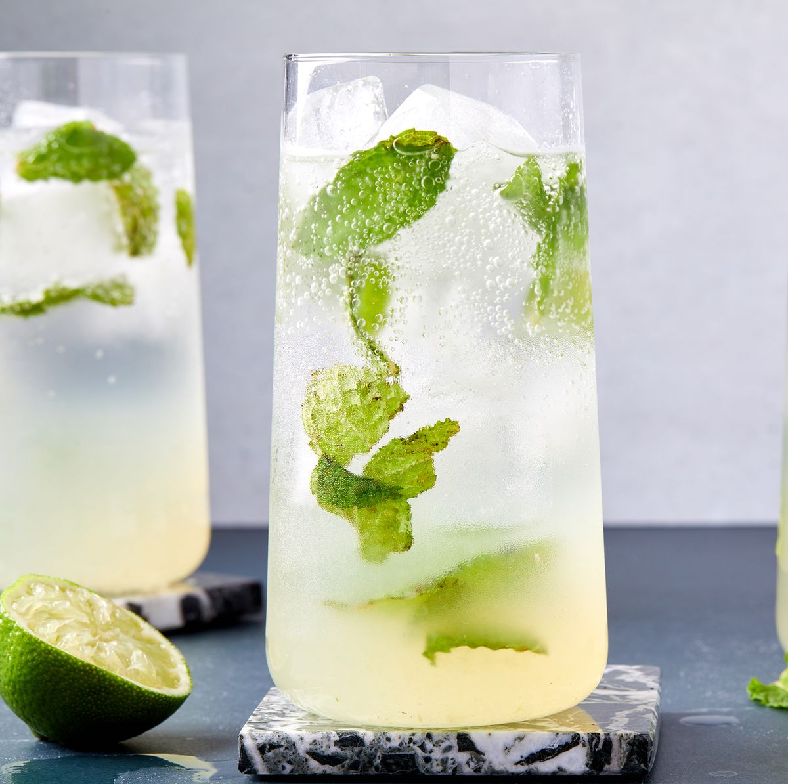

Mojito

Description
A mojito is a classic highball drink that originated in Cuba.
Ingredients
- 10 fresh mint leaves
- ½ medium lime, cut into 3 wedges, divided
- 2 tablespoons white sugar, or to taste
- 1 cup ice cubes, or as needed
- 1 ½ fluid ounces white rum
- ½ cup club soda, or as needed
Steps
- Place mint leaves and 1 lime wedge into a sturdy glass. Use a muddler and
crush to release mint oils and lime juice.
- Add remaining lime wedges and 2 tablespoons sugar, and muddle again to
release the lime juice. Do not strain the mixture.
- Fill the glass almost to the top with ice. Pour in rum and fill the glass with club
soda.
- Stir, taste, and add more sugar if desired.
Nutrition facts
203 0g
Calories Fat
29g 0g
Carbs Protein